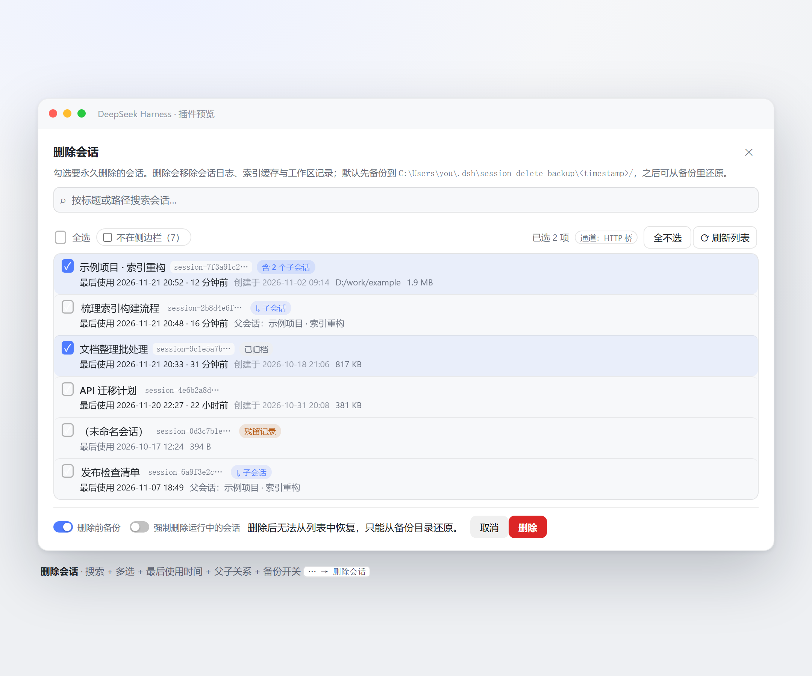
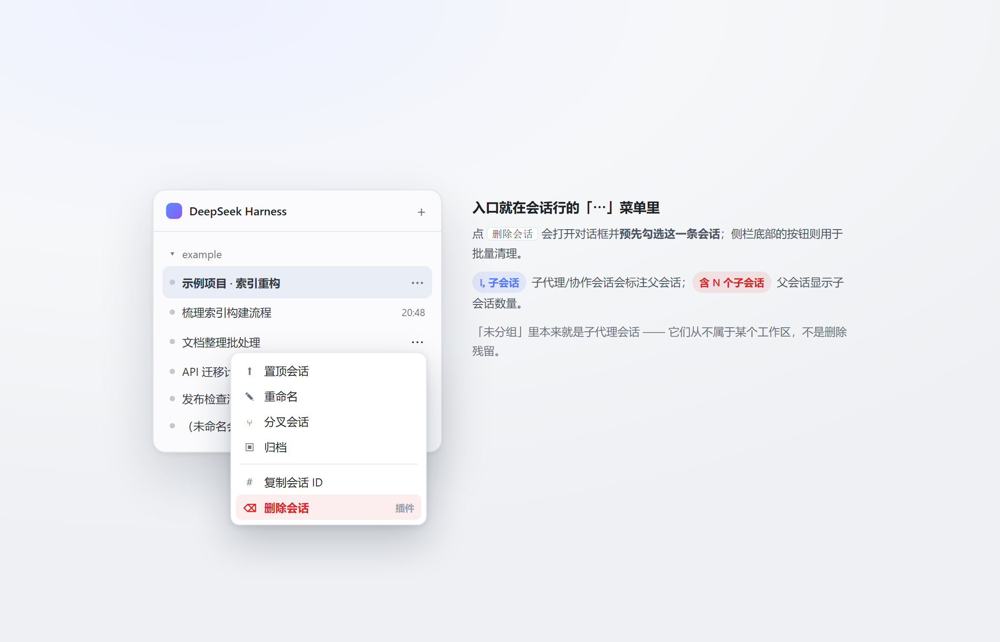
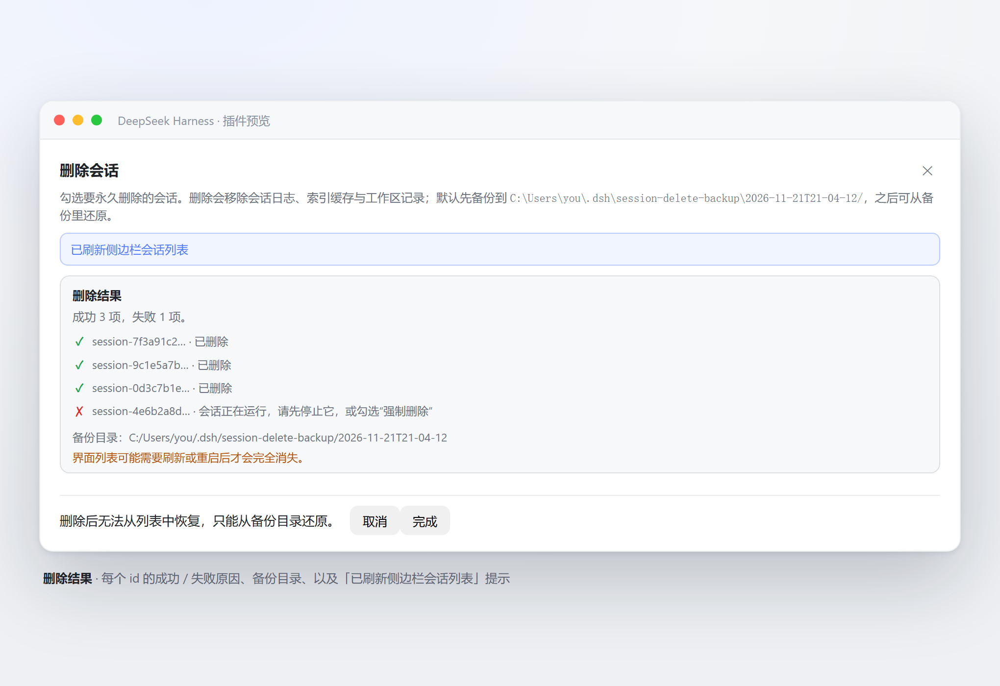

为什么需要它
DeepSeek Harness 目前没有删除会话的能力。
sessionPersistence
只有 create / open / flush / stat / list —— 没有 delete。
workspaceRegistry.delete()
只删「工作区登记」，并显式保留会话日志。
归档（archive）
只是可逆的隐藏，文件仍在磁盘上。
部署 / 安装命令
四种方式，任选其一。装完 刷新一次页面，侧栏就会出现「删除会话」。
① DSH 插件管理器（推荐）
# 在 Harness 会话里让 Agent 执行
plugin_manager install_bundle target: /path/to/dsh-session-manager
② Release tarball
# 下载 dsh-session-manager-0.2.0.tgz 后
dsh plugin --profile desktop add \
./dsh-session-manager-0.2.0.tgz
③ 本地开发（link）
dsh plugin --profile desktop add \ link:/path/to/dsh-session-manager
④ 手工挂载
# profile 的 package.json 依赖 + cordis.patch.yml
- insert:
- id: dsh-session-manager
name: dsh-session-manager
校验 / 启用 / 卸载
# 探活（端口以运行时为准） curl http://127.0.0.1:<port>/dsh-session-manager/status # 启用 / 停用（插件管理器） plugin_manager set_bundle target: dsh-session-manager enabled: true plugin_manager set_bundle target: dsh-session-manager enabled: false # 卸载 dsh plugin --profile desktop remove dsh-session-manager
DSH 插件库（Marketplace）
本页同时托管一份符合 format: 1 的插件库索引，可直接添加为 DSH 的索引源。
添加方式
DSH 设置 → 插件市场（Discover）→ 添加索引源；或在 profile 的 patch 里给 plugin-market 行配置 indexes: [<上面的 URL>]。
索引内容（节选）
{
"format": 1,
"title": { "en": "dsh-session-manager", "zh": "会话管理器" },
"plugins": [{
"name": "dsh-session-manager",
"versions": [{
"version": "0.2.0",
"publishTimestamp": 1794700000,
"source": { "type": "git",
"url": "https://github.com/shuixing14/dsh-session-manager",
"commit": "<40-hex commit>" },
"engines": { "dsh": ">=0.2.0-rc.2" }
}]
}]
}
界面
截图使用虚构示例数据。

搜索 + 多选 + 最后使用时间 + 父子关系 + 备份开关

入口在会话行的「⋯」菜单里，打开即预选该会话

删除结果：逐条成功 / 失败、备份目录、刷新提示
安全模型
| 机制 | 说明 |
|---|---|
| 先备份后删除 | 备份失败立即中止，不会出现「备份没成但已经删了」 |
| 路径包含校验 | 会话 id 先过严格格式，再确认目录在 <DSH_HOME>/sessions 内 |
| 受保护会话 | 当前会话、其后代、运行中的会话默认拒绝（运行中需显式强制） |
| 端点栅栏 | 只接受回环 / 同源；写请求要求 JSON + 页面口令；跨站一律 403 |
| 可回滚 | 改写 workspace.json 前留 .bak-<时间戳>；备份目录可整体还原 |